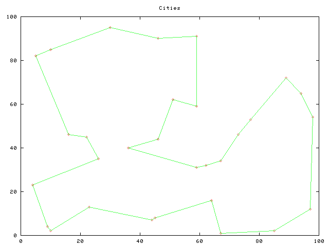

In an effort to learn more about AI programming techniques, I'm trying to port M. Tim Jones' AI Application Programming examples from C to Ruby. I'm planning to port these (porting notes are here) in no particular order.
The errata for the book is posted on Tim's web site.
This project is hosted by RubyForge, forums and such-like are here.
Updated 10/23/03: Done with translation of the n-Queens solver, code is here. Here's a solution to a 16 queen board (took about 15 hours (!!) to run):
. . . . . . Q . . . . . . . . . . . . . . . . . Q . . . . . . . . . Q . . . . . . . . . . . . . . . . . . . . . . . . . . Q . . . . . Q . . . . . . . . . . . . . . . . . . . . . Q . . . . . . . . . . . . . . . . . . . . . Q . . . . Q . . . . . . . . . . . Q . . . . . . . . . . . . . . . . . . . . . . . . . . . . . Q . . . . . . . . . . . . . Q . . . . . . . . . . Q . . . . . . . . . Q . . . . . . . . . . . . . . . . . . . . . . . . . Q . . . . . . . . . Q . . . . . . . . . . . . . . . . . . . . Q . . . . .
Updated 10/22/03: Traveling Salesman via ant algorithm is done, code is here.

Updated 03/11/04: Game neurocontroller translation is done, code is here. This was a fairly easy one to translate, and some sizeable duplicate chunks were easy to refactor away.
[tom@hal ch5]$ ./backprop.rb Network is 100% correct 2111 action Attack 1112 action Hide 0000 action Wander 0111 action Hide 2013 action Hide 2103 action Hide 0103 action Run [tom@hal ch5]$
Updated 04/22/04: Done, code is here.
Generation 0
Maximum fitness = 380.000000 (380)
Average fitness = 14.110000
Minimum fitness = 0.000000
Crossovers = 1202
Mutations = 367
Percentage = 0.037132
Found solution
Program 126 : 02 04 03 03 05
Fitness 380
x^3 + y^2 + z. It wasn't solved after 1000 generations and 87 minutes of crunching, so I set MAX_PROGRAM to 50 and restarted.
Updated 11/14/03: About 30% done, code is here. This is going to take a while; there are about 1050 lines of code to translate, while other chapters had much less - simulated annealing, for example, was only 280 lines of code. On the other hand, a lot of the code is just disappearing and being replaced with calls to Array.collect and the like. Yay!
Updated 10/16/03: Battery charger and predator prey examples complete, code is here.
./fuzzy.rb > predator_data.txt && ./predator_gnuplot
./fuzzy.rb -battery > battery_data.txt && ./battery_gnuplot
Battery charger example: below is a graph (thanks gnuplot!) showing the relationships between the battery's voltage and temperature - you can see when the fast charger kicks in and when it falls back to trickle charge mode.
Predator/prey example: below is an image of the predator seeing the prey and turning towards it.
10/30/03: Done, code is here. Here's a sample run (I used some quotes from C. S. Lewis as the corpus):
It is always something couldn't guessed That's one reasons I suppose must conclude. It's Badness is idle talk any final victory over materialism No Christian indeed no good game without rules In. Safety happiness can only cobblers to say whether teeth were being well governed Everything except some natural inferior. When humans should have need of the reasons It's a real Right and the percentage cannot increased. Perfect humility dispenses with the first sketch As long as judging value result Who can be found to the.
TODO: Refactor some of those arrays into classes - especially bigram_array.
if (foo) {
/* do something */
}
It needs to be translated to
if foo != 0 # do something endin Ruby. In other words. "non zero" in C needs to be translated to "not nil and not zero" in Ruby.
do..while forever loop in C can be done like this in Ruby:
begin # do stuff end until !true
int x = 0;
printf("Value = %d\n", x++);
prints out "Value = 0". Since Ruby doesn't have an postincrement operator, make sure you put the incrementor _after_ the print statement. Like this:
x = 0
puts "Value = #{x}\n"
x += 1
This bit me something fierce on the Ant Algorithm code. Of course, what really bit me was that I didn't write any unit tests. Gack.
static keyword which can be used inside functions to indicate that a variable is only initialized once. This translates to a class-level variable in Ruby. At least, that's the best comparison I can think of at the moment, comments are welcome.
Array.max. Thanks to Charles Comstock for suggesting this in lieu of my original suggestion of the O(n) Array.sort[0].
RAND_MAX, it's defined in stdlib.h. On my Linux 2.4 workstation it's 2147483647.
#define RAND_WEIGHT ( ((float)rand() / (float)RAND_MAX) - 0.5)remember that a call to the
rand() function is being inserted each time the preprocessor expands the macro. So you can't just define a Ruby constant RAND_WEIGHT - if you do, you'll always get the same value. You need to define a new rand_weight method and call that instead.